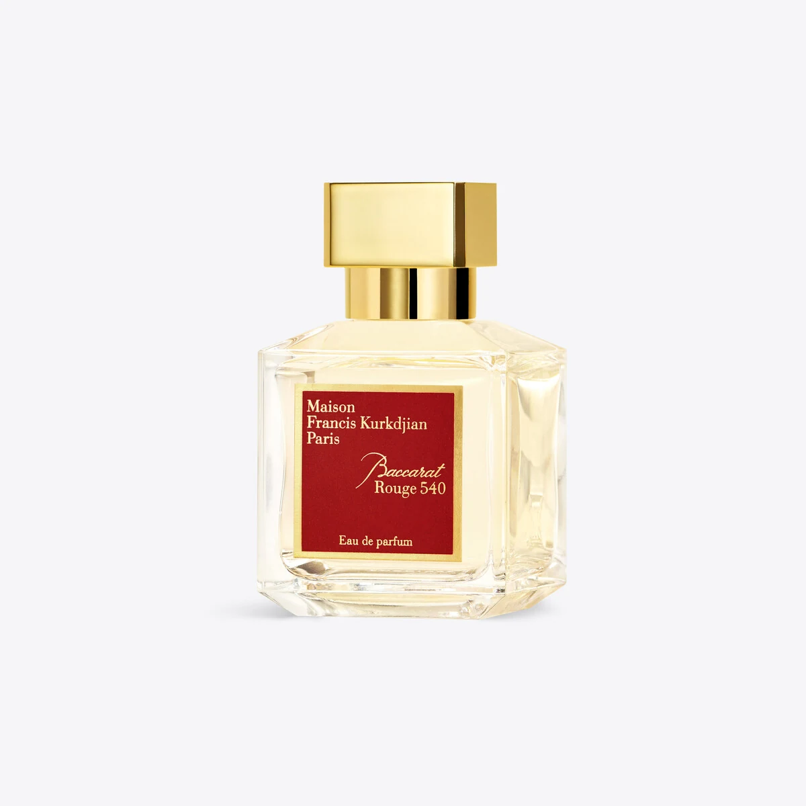

THE STYLE EDITMaison Francis Kurkdjian
Baccarat Rouge 540 Eau de Parfum, 70 ml / 2.4 fl.oz.
Baccarat Rouge 540 connects perfume with the visual language of crystal.
US$360Explore ↗
U.S. reference · before taxOfficial page snapshot · reported crawled the same day; reviewed 27 October 2026